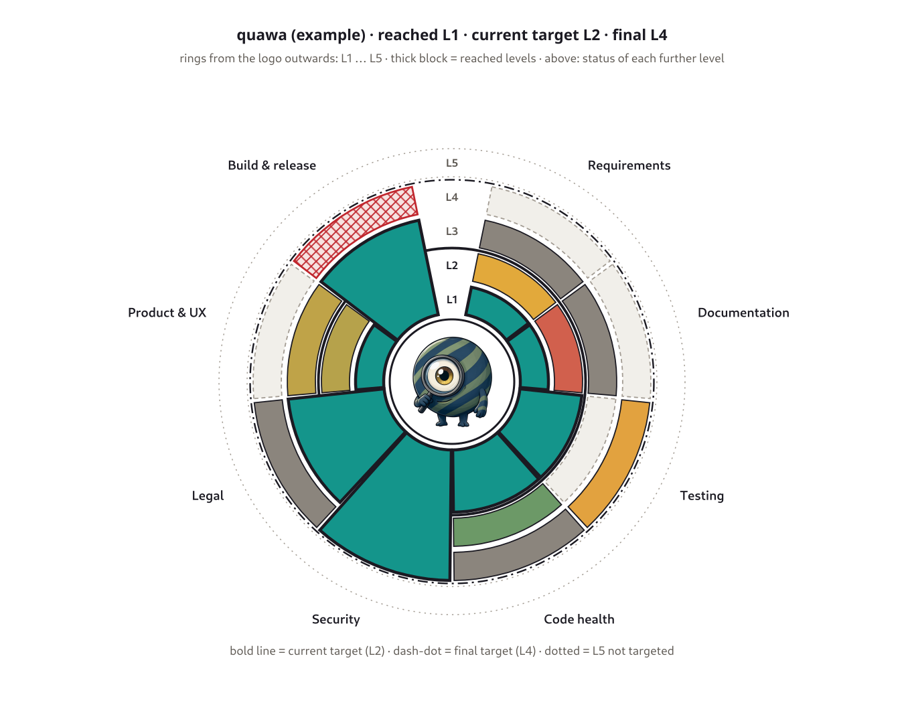

quawa¶

Quality maturity you can see. quawa defines how mature a software project should be, measures how mature it is, and shows both in one picture: score rings around the tool’s logo, one ring per maturity level, one segment per quality area.
quawa measures always and completely – also levels that are not asked for yet. A gap is information, not a broken build.
Why quawa¶
With AI, software comes about differently: the whole thing roughly first, then finer round by round. A feature an agent built in an hour looks finished, and the pipeline is green. Whether someone else can build on it yet, whether the licences fit or whether the tests check anything at all – you cannot tell by looking at it.
Green or red does not help much there. At the start almost everything is red, and that is fine – nobody asks for architecture docs in week two. So quawa shows the distance to the target you set for now, and how it shrinks over time.
Levels, not pass or fail. Six levels from Vibe code to Audited describe a state; each level adds measures to the ones below (The maturity model).
Eight areas. Requirements, documentation, testing, code health, security, legal, product & UX, build & release – each reaches its own level.
One fixed model. The danwos model decides what is measured on which level, so level 2 means the same in every tool (The fixed danwos model deci... (DEC_DANWOS_MODEL)). A project only says where its results come from (Configuration).
Targets with a date. A project aims for one level today and a higher one later; levels in between switch on by date or release.
At a glance¶

quawa measuring itself – the values are invented.¶
The thick block around the logo shows what each area has reached. The picture gets hills and valleys, and you see right away where a tool is weak.
Above it, every further level shows its own state: a score colour from red to green, dark grey when a measure has no result yet, light and dashed when nobody has defined how to measure it, red hatching when the measurement itself is broken.
The lines show the current target and the final target; the dotted ring is a level the project does not aim for.
What each colour, line and variant means: The rings.
Status¶
quawa is a concept. These docs describe the model and the picture; the first implementation – configuration format, runner and report – comes next. The first projects to be measured are deciwa, quawa itself and monsterbrain.
Product